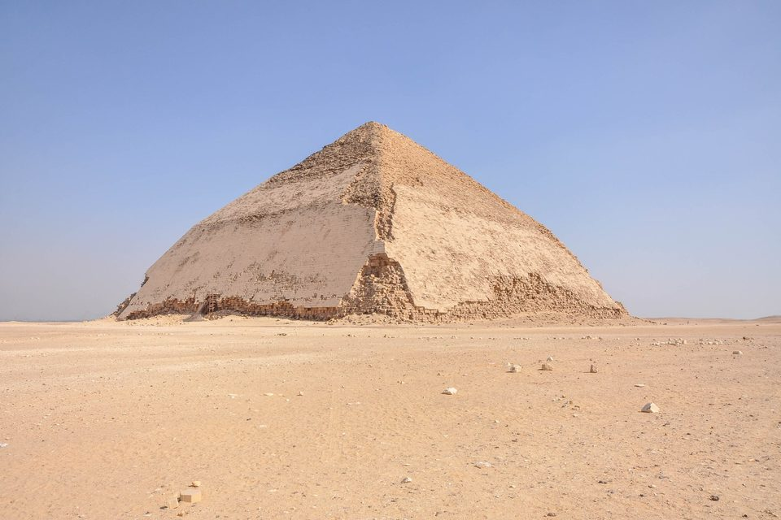

Egypt · Dahshur
Dahshur: Bent Pyramid of Sneferu audio guide
8 stops · 12 min
Billed in ZAR
Unlocks in this browser after payment.
The pyramid that changed its mind halfway up. Listen here, or get the Earwise app to play as you walk.
Stops
- 1
A pyramid with a kink
On the desert ground a little north of the pyramid, looking up at its profile. This is stop 1 on the route.
Play0:00 / –:––Read along
Look at the outline against the sky. The lower part of this pyramid rises steeply, at about fifty-four or fifty-five degrees. Then, roughly halfway up, the sides turn inward and climb on at about forty-three degrees. That change of angle gives the Bent Pyramid its modern name. No other pyramid in Egypt has a silhouette like it. Its base measures about one hundred and eighty-eight metres on a side, and it stands about one hundred and five metres high.
It was built for Sneferu, the first king of the Fourth Dynasty and the father of Khufu. He reigned around 2600 BC, though chronologies differ by a few decades. Sneferu raised three great pyramids, at Meidum and here at Dahshur, about forty kilometres south of Cairo.
When it was finished, it was clad in polished white limestone from Tura. Its ancient name is usually translated "Sneferu is shining in the south", or simply "Sneferu is shining". The shining was meant literally.
Egypt's Ministry of Tourism and Antiquities sees this pyramid as a moment of transition. Before it came the Step Pyramid of King Djoser at Saqqara, a stack of giant steps. After it came the smooth-faced pyramids. The steep first angle here belongs to that change from one design to the next.
This pyramid field is part of the World Heritage site UNESCO lists for Memphis and the pyramid fields that run from Giza to Dahshur.
- 2
The skin that survived
At the south-east corner of the pyramid, close to the base, looking along the lower slope. This is stop 2 on the route.
Script and audio included when you buy - 3
Why the angle changes
Midway along the south face, looking up at the line where the slope changes. This is stop 3 on the route.
Script and audio included when you buy - 4
The north entrance
At the foot of the wooden stairway on the north face, looking up to the entrance. This is stop 4 on the route.
Script and audio included when you buy - 5
The corbelled chambers
Inside the pyramid, in the large antechamber at the end of the north passage. This is stop 5 on the route.
Script and audio included when you buy - 6
The west entrance and the upper chamber
On the ground at the foot of the west face, looking up to the high entrance. This is stop 6 on the route.
Script and audio included when you buy - 7
The satellite pyramid
On the south side of the main pyramid, in front of the small satellite pyramid. This is stop 7 on the route.
Script and audio included when you buy - 8
The temples and the causeway
On the east side of the pyramid, near the ruins of the small mortuary temple, looking north-east. This is stop 8 on the route.
Script and audio included when you buy
On the map
All 8 stop pins for this guide are marked. Open map